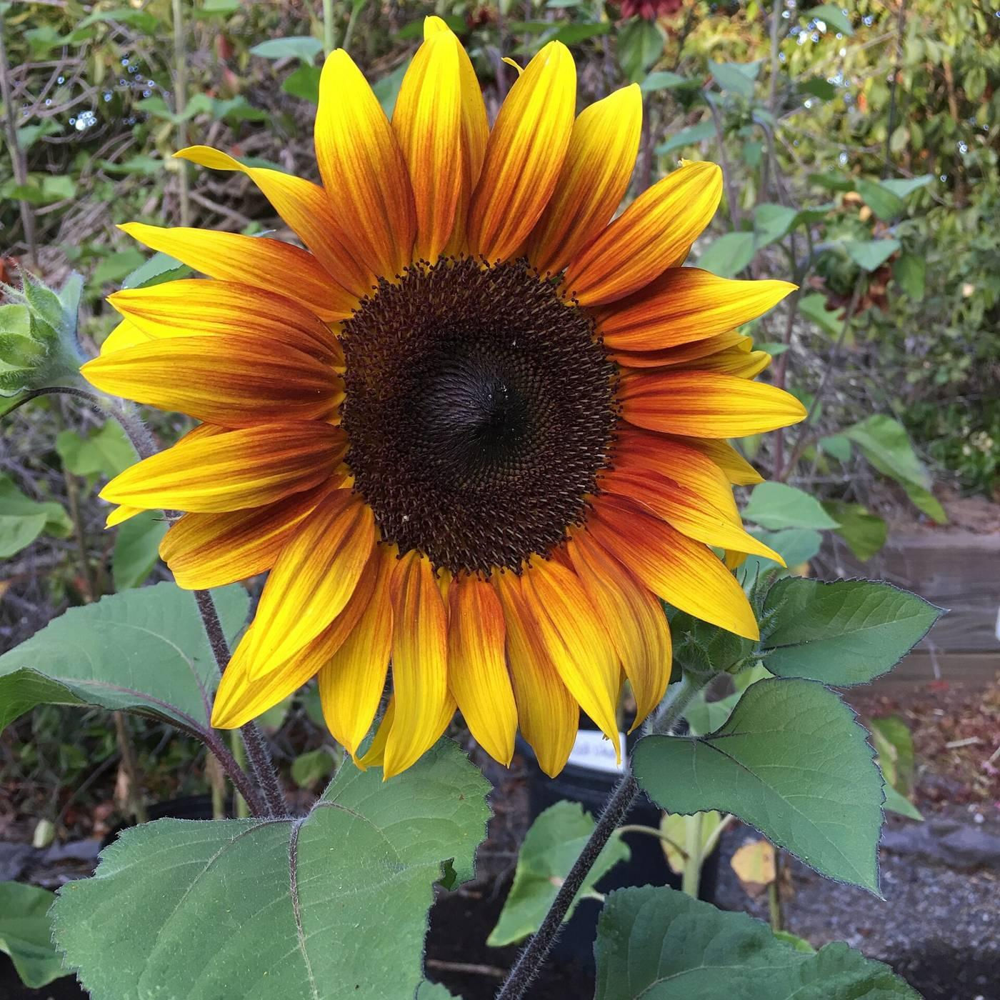

店のこと
プランジャー式抽出器の部位の配置図
お店の詳しい情報は準備中です。ここでは、制作側が考えたデザインの考え方を紹介します。


制作側の連想
番号は、部位の番号
ホームの図にある1〜6の番号は、それぞれ抽出器の部位の名前に対応します。プランジャー式のコーヒー抽出器の部位を図にしたもので、制作側の連想です。お店の理念・由来とは無関係で、実際の器具の仕様を示すものでもありません。
1押し棒
上から手で押し下げる、持ち手つきの棒の部分。
2ゴムのシール
筒の内側にぴったり触れて、すき間をふさぐ丸いゴム。
3チャンバー
押し棒とゴムのシールが出入りする、まっすぐな筒。
4目盛り
筒の側面に並ぶ、量を読みとるための細い線。
5フィルターキャップ
筒の先にねじ込む、小さな穴のあいたふた。
6つば
筒の先にある、ぐるりと張り出した輪。置いたときに安定させる。
写真(イメージ)
写真(イメージ)



写真はイメージです。お店のものではありません。
確認できていること
お店の情報
| 屋号 | バイカーズカフェ バンブージョイント |
|---|---|
| 所在地 | 〒885-0012 宮崎県都城市上川東２丁目３１−１６ |
| SNS | Instagram @cafe_bamboojoint |
| そのほか | 準備中 |